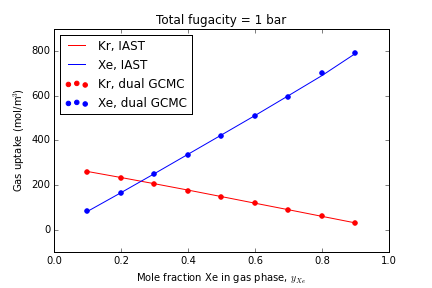

Documentation for IAST Package¶
This Python package takes pure component gas adsorption isotherms in a nanoporous material and predicts mixture isotherms. Ideal Adsorbed Solution Theory (IAST) is the framework used to predict the mixture adsorption isotherm from the pure component adsorption isotherms.
This code has three options to apply IAST to the pure component adsorption isotherms:
- Fit a Langmuir isotherm model
- Fit a quadratic isotherm model
- Use linear interpolation (numerical quadrature for spreading pressures)
Installation¶
Clone the repository on Github. cd into the folder with the source code, /src, and run the setup script:
python setup.py
Use¶
As an example for use, see the /test directory. We test the IAST code with a binary mixture of Xe and Kr in IRMOF-1.
Simulated pure component adsorption isotherms at 298 K (from single componenent grand-canonical Monte Carlo) are present in:
- IRMOF-1_clean_Xe_isotherm_298K.csv
- IRMOF-1_clean_Kr_isotherm_298K.csv
We simulated binary mixture isotherms of Xe/Kr in IRMOF-1 at 1 bar total pressure and at different mixture conditions using dual-component grand-canonical Monte Carlo. This data is present in mixture_Xe_Kr_IRMOF-1_clean_298K.csv. We use IAST to reproduce this result.
First, import the IAST package:
import IAST
Import the pure component isotherms¶
Use the Pandas package to load the pure component adsorption isotherms as DataFrames:
import pandas as pd
df_Xe = pd.read_csv("IRMOF-1_clean_Xe_isotherm_298K.csv", skiprows=1)
df_Kr = pd.read_csv("IRMOF-1_clean_Kr_isotherm_298K.csv", skiprows=1)
The units for pressure and loading in both DataFrames must be consistent; loading of gas must be in a molar quantity for IAST to apply (e.g. mmol/g or mmol/cm3). The IAST package will then work with these units throughout.
Construct isotherm objects¶
We separate the process of characterizing the pure component adsorption isotherms from performing IAST. Construct the models by passing the DataFrame with the pure component adsorption isotherm and the names of the columns that correspond to the loading and pressure.
- Langmuir isotherm model
xe_isotherm = IAST.LangmuirIsotherm(df_Xe,
loading_key="Loading(mol/m3)",
pressure_key="Pressure(bar)")
kr_isotherm = IAST.LangmuirIsotherm(df_Kr,
loading_key="Loading(mol/m3)",
pressure_key="Pressure(bar)")
- Quadratic isotherm model
xe_isotherm = IAST.QuadraticIsotherm(df_Xe,
loading_key="Loading(mol/m3)",
pressure_key="Pressure(bar)")
kr_isotherm = IAST.QuadraticIsotherm(df_Kr,
loading_key="Loading(mol/m3)",
pressure_key="Pressure(bar)")
- Linear interpolation model
The linear interpolation model has an additional, optional argument fill_value that tells us what loading to assume when we attempt to extrapolate beyond the data point with the highest pressure. In this example, we assume that the loading at the highest pressure point is equal to the saturation loading. By default, fill_value=None and an error is thrown when the IAST code tries to extrapolate loading beyond the highest pressure point in the pure component adsorption isotherm.
xe_isotherm = IAST.InterpolatorIsotherm(df_Xe,
loading_key="Loading(mol/m3)",
pressure_key="Pressure(bar)",
fill_value=df_Xe["Loading(mol/m3)"].max())
kr_isotherm = IAST.InterpolatorIsotherm(df_Kr,
loading_key="Loading(mol/m3)",
pressure_key="Pressure(bar)",
fill_value=df_Kr["Loading(mol/m3)"].max())
Once an isotherm model is constructed, we can view the fit of the isotherm model to the data by:
IAST.plot_isotherm(xe_isotherm)
The plot can be rendered on the log-scale by passing options xlogscale=True and/or ylogscale=False.
Using the adsorption isotherm objects, we can calculate the predicted loading at a new pressure, for example 1.0, by:
xe_isotherm.loading(1.0)
or the spreading pressure via:
xe_isotherm.spreading_pressure(1.0)
Peform IAST calculation¶
Given the pure component isotherm models, we now illustrate how to use IAST to predict loading when the material is in equilibrium with a mixture of the said gases.
As an example, given the pure component adsorption isotherm objects xe_isotherm and kr_isotherm above, we seek the loading [at the same temperature as the pure component isotherms] at a 20/80 mol % Xe/Kr mixture at a pressure of 1.0. To do this, we call:
p = [.2, .8] # list/array of partial pressures
q = IAST.IAST(p, [xe_isotherm, kr_isotherm], verboseflag=True)
which will return q, an array of component loadings at these mixture conditions predicted by IAST. Entry 0 will correspond to Xe; entry 1 will correspond to Kr.
Theory¶
Ideal Adsorbed Solution Theory was developed by Myers and Prausnitz:
Myers, A. L., & Prausnitz, J. M. (1965). Thermodynamics of mixed‐gas adsorption. AIChE Journal, 11(1), 121-127.
We follow the method outlined in the reference:
Tarafder, A. and Mazzotti, M. A method for deriving explicit binary isotherms obeying ideal adsorbed solution theory. Chem. Eng. Technol. 2012, 35, No. 1, 102-108.
Tests¶
This code was tested using pure component Xe and Kr adsorption isotherms in IRMOF-1 to predict the uptake of Xe and Kr at 1 bar in a variety of Xe mole fractions. The test is displayed in this IPython notebook, and the files are in the /test directory.
TL;DR The following plot shows the simulated Xe/Kr adsorption (points) using binary grand-canonical Monte Carlo simulations against the IAST prediction from pure-component adsorption isotherms (solid lines).
Some notes for troubleshooting¶
Class documentation and details¶
-
class
isotherms.InterpolatorIsotherm(df, loading_key=None, pressure_key=None, fill_value=None)¶ Interpolator isotherm object
-
__init__(df, loading_key=None, pressure_key=None, fill_value=None)¶ Instantiation
Parameters: - df – DataFrame adsorption isotherm data
- loading_key – String key for loading column in df
- pressure_key – String key for pressure column in df
- fill_value – Float value to assume when interp1d goes outside bounds
Returns: self
Return type:
-
loading(P)¶ Interpolate isotherm to compute loading at pressure P
Parameters: P – float pressure (in corresponding units as df in instantiation) Returns: loading at pressure P (in corresponding units as df in instantiation) Return type: Float or Array
-
spreading_pressure(P)¶ Calculate spreading pressure at a bulk gas pressure P
Use trapezoid rule on isotherm data points
Spreading pressure :math`Pi = int_0^p q(hat{p})/ hat{p} dhat{p}`
Parameters: P – float pressure (in corresponding units as df in instantiation) Returns: spreading pressure Return type: Float
-
-
class
isotherms.LangmuirIsotherm(df, loading_key=None, pressure_key=None)¶ Langmuir isotherm object to store pure-component adsorption isotherm
:math:`M
rac{KP}{1+KP}`
-
__init__(df, loading_key=None, pressure_key=None)¶ Instantiation
Parameters: - df – DataFrame adsorption isotherm data
- loading_key – String key for loading column in df
- pressure_key – String key for pressure column in df
Returns: self
Return type:
-
loading(P)¶ Given stored Langmuir parameters, compute loading at pressure P
Parameters: P – Float or Array pressure (in corresponding units as df in instantiation) Returns: loading at pressure P (in corresponding units as df in instantiation) Return type: Float or Array
-
spreading_pressure(P)¶ Calculate spreading pressure at a bulk gas pressure P
Parameters: P – float pressure (in corresponding units as df in instantiation) Returns: spreading pressure Return type: Float
-
-
class
isotherms.QuadraticIsotherm(df, loading_key=None, pressure_key=None)¶ Quadratic isotherm object
:math:`M
rac{(K_a P + 2 K_b P)P}{1+K_aP+K_bP^2}`
-
__init__(df, loading_key=None, pressure_key=None)¶ Instantiation
Parameters: - df – DataFrame adsorption isotherm data
- loading_key – String key for loading column in df
- pressure_key – String key for pressure column in df
Returns: self
Return type:
-
loading(P)¶ Given stored Quadratic isotherm parameters, compute loading at pressure P
Parameters: P – float pressure (in corresponding units as df in instantiation) Returns: loading at pressure P (in corresponding units as df in instantiation) Return type: Float or Array
-
spreading_pressure(P)¶ Calculate spreading pressure at a bulk gas pressure P
Parameters: P – float pressure (in corresponding units as df in instantiation) Returns: pi: float spreading pressure
-
-
isotherms.plot_isotherm(isotherm, withfit=True, xlogscale=False, ylogscale=False)¶ Plot isotherm data and fit
Parameters: - isotherm – LangmuirIsotherm,QuadraticIsotherm,InterpolatorIsotherm the adsorption isotherm object
- withfit – Bool plot fit as well
- xlogscale – Bool log-scale on x-axis
- ylogscale – Bool log-scale on y-axis
-
IAST.IAST(p, isotherms, verboseflag=False)¶ Perform IAST to predict multi-component adsorption isotherm from pure component adsorption isotherms.
The material is now in equilibrium with a mixture of gases with partial pressures in the array p.
Parameters: - p – Array partial pressures of gas components, e.g. [.5, .5]
- isotherms – list of pure-component adsorption isotherms. e.g. [xe_isotherm, kr_isotherm]
- verboseflag – Bool print stuff
Returns: predicted uptakes of each component
Return type: Array